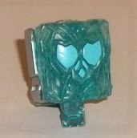
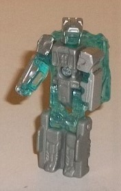
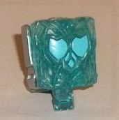
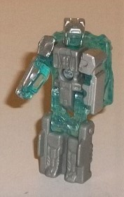
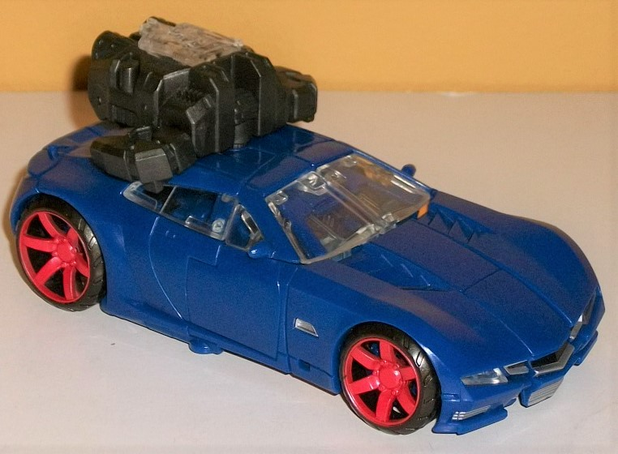
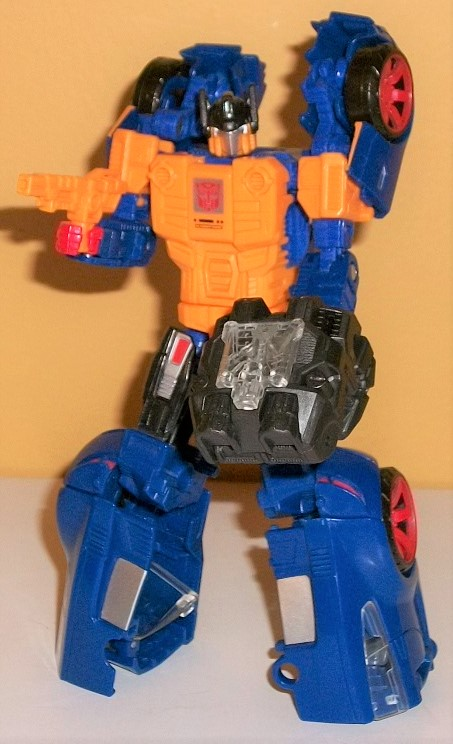
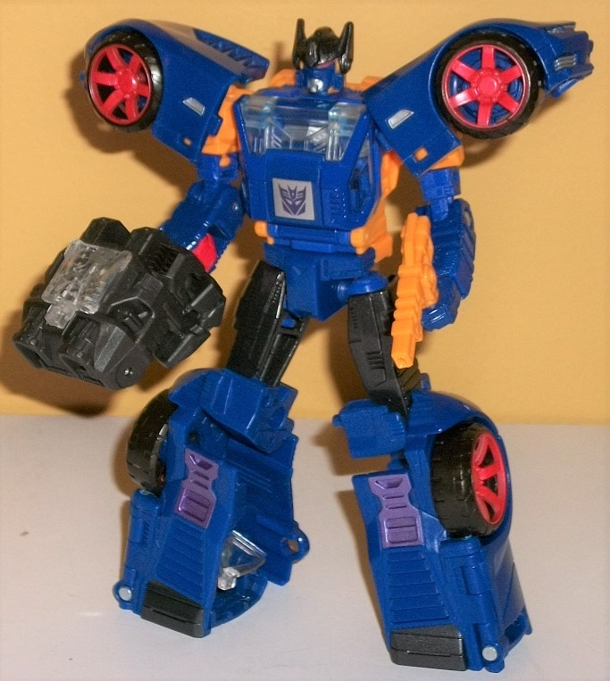

 
Size : Prime Master
Difficulty of Transformation : Very Easy
Color Scheme : Milky gray, transparent light blue, silver, and some light sky blue
Individual Rating : 3.5
Set Price: ~$25 (U.S)
 Prima
Prime (Prime Wars)
Prima
Prime (Prime Wars)


Size
: Prime Master
Difficulty of Transformation
: Very
Easy
Color Scheme
: Milky gray, transparent
light blue, silver, and some light sky blue
Individual Rating
: 3.5
(NOTE: Because this is a repaint, this is not a full-blown review. This mainly covers any changes made to the mold and the color scheme, and merely compares it to the original Prima Prime. For a review on the mold itself, read the review of the original Prima Prime in the "Throne of the Primes" set here .)
Unlike the
other
two
Prime Masters included in these "Prime Wars lookback" sets, Prima Prime
never got his own Prime Master set, but rather his original version was
included in the SDCC-exclusive "Throne of the Primes" set. Thus, for those
who aren't interested in getting that big-ticket item, Prima Prime here
might prove more of a draw than the Prime Masters in the other sets. He
still has the same general "heroic good guy/Prime of Light" look to him,
but like the other "Prime Wars Trilogy" Prime Masters, he's largely made
of transparent plastic. For Prima, it's a light blue plastic, which of
course fits him well. In robot mode, his chest and lower legs are of a
milky medium gray (thankfully not light gray, so it doesn't look that bad),
while his helmet and the outside of his arms are painted a spiffy silver
color. I don't like how the inside of his arms looks transparent, but leaving
the face of his robot head unpainted was a good call, methinks, as it lets
his head light up with a light source behind him, which is certainly fitting
for what he represents. The silver/blue color combo is pretty nice-- at
least for a figure this small-- and the gray makes for an okay substitute
for the silver. Unfortunately, in core mode only the actual "pec/ab" Prima
symbol is painted a light sky blue. It's a nice color, but with the rest
being a transparent light blue, there's no paint to help bring out all
the myriad other details on the front of the core mode.
No mold changes have
been made to this version of Prima Prime.

 Punch/Counterpunch
Punch/Counterpunch



Allegiance
: Autobot or Decepticon
Size
: Deluxe
Difficulty of Transformation from Vehicle
to Robot
: Easy
Difficulty of Transformation between
Robot Modes
: Very Easy
Color Scheme
: Dark blue, orange
"cheesy" yellow, and some charcoal black, silver, black, light metallic
purple, light blue, and light red
Individual Rating
: 9.2
Punch and Counterpunch--
both sides of the same dual-personality TF character-- both have the same
alt mode. (You think this would clue in the Autobots and Decepticons to
his dual identity, but I guess not.) Anyways, he's a dark blue generic
sportscar, and this mode is largely flawless. The generally curvy proportions
are pretty spot-on, and the only robot mode extras are the little bits
you can see inside his clear plastic windows. (Speaking of which, his side
and front windows are clear plastic, but his small rear window is simply
painted silver-- presumably because putting additional transparent plastic
there would make the large piece too structurally compromised, I guess.)
He doesn't have any decorative tampos on him, but beyond the blue and clear
plastic, there's black wheels with eye-catching light red paint on the
hubs. His front grill/headlight details-- which are fairly angular in appearance--
are mostly painted silver, with the main headlight on each side also being
covered with a piece of clear plastic, and the very middle of the grill
having some black paint on it. The rear of this mode is also fully detailed,
with places like an area for the license plate, exhaust vents, and taillights
present, although unfortunaely only the taillights are painted (red). I
would've liked a bit more paint overall, but some interesting details like
the vents on the front hood help break up all the smooth blue a bit. Since
he's listed as being part of the "Power of the Primes" portion of the "Prime
Wars trilogy" look-back subline on Amazon, Punch/Counterpunch comes with
a piece of charcoal black Prime Armor. However, he can't really use it
as a leg/arm, since the toy isn't made to combine with others, so its connection
to PotP is pretty tenuous. Still, he can store a Prime Master in it, and
his robot chests have holes if you want to plug it in there as Prime Armor,
so he can interface with it a bit. He also has a small orange-yellow gun,
which can store on the underside of the car mode. The Prime Armor can only
store in the peg hole on the top roof, though, so it sticks out a bit more.
The transformation to
Punch's robot mode is fairly straightforward; the back half of the car
mode opens up, swings down and out, and then collapses slightly to form
his legs, while the sides separate a bit to form the arms, and the middle
section of the front hood folds back into his chest. The end result is
a pretty decent robot mode, though the legs are a bit too long proportionally--
particularly the lower legs, which have no discernible feet. The car front-halves
are angled backwards behind his shoulders at about a 45-degree angle. I
wish they had collapsed a bit more onto the shoulders, but they don't look
outright bad. The arms are pretty decent overall, and the chest and head
are pretty well-proportioned. The amount of mold detailing on the arms,
body, and upper legs is pretty impressive, with vent-like details quite
prevalent, along with angular chest/ab details on the chest. The headsculpt
is also pretty stellar, with two large, triangular side antennae, a small
hole in the center of the forehead-helmet, small side chin guards, two
light blue eyes, and a silver face plate. The color combo is broken up
considerably more in this mode with an orangish "cheesy" yellow plastic
used prominently on Punch's body, shoulders, and the lower part of his
head, as well as being painted slightly on the top of his shoulder-car
bits. His fists are a nice Autobot red (though the inside of the fist holes
are orange), and he's got some silver and red paint on his upper legs,
too. He has a silver-backed Autobot symbol in the middle of his chest,
with some Morse code-esque dots and lines below it. Lower the Autobot symbol
and you'll see a hole to plug his Prime Armor into, if you wish, or he
can awkwardly hold it in one of his hands, or on his back. For articulation
in this mode, Punch can move at the neck, shoulders, elbows (at two points),
inwards slightly at the wrists, waist rotation, and movement at the hips
(at two points) and knees-- thus he's fairly well-articulated. Some ankle
or more shoulder movement would've been appreciated, though, and there's
some ugly gaps slightly below the knee joint that become all the more apparent
if you bend them a bit.
The transformation from
Punch to Counterpunch is incredibly easy-- for the most part, you just
turn him around. Then readjust his shoulder armor so they're facing out
and not back, flip around his fists, and push up on his helmet to angle
it back and show his Counterpunch face and hide his Punch face. Done. This
mode keeps more of the two-tone "dark blue and black" color scheme, with
Punch's orange-yellow barely being visible in this mode-- even his fists
are now blue, though still with orange around the interior of the fist
holes. The darker colors certainly fit a Decepticon better, though I'd
be lying if I said the breakup was as good here as in Punch mode. The chest
looks pretty good, with some clear plastic on the faux windshield and a
silver-backed Decepticon symbol (which again, you can fold down to reveal
a hole for his Prime Armor). The arms and legs have the same proportions
as Punch's robot mode, since they're just the backside of those limbs.
As opposed to just using the back half of the car for legs, though, there's
some detailing on Counterpunch's lower legs--some flat vented details near
his flat black feet, and some light metallic purple used on his kneecaps,
which I really wish was used a bit more on the toy. The head uses Punch's
black helmet, but now has two red eyes, a dark blue face, and a silver
chin, with some small side vents on the vent. It definitely looks more
eeevil than Punch's head. I like the shoulders in Counterpunch's configuration
considerably better, as they enhance the silhouette more and help make
the red on the tires stand out. Plus, they allow him to have more inwards
movement at the shoulders (though other than that, he's got the same articulation
as Punch).
The first non-
Botcon
exclusive
release of a "modern" Punch/Counterpunch toy makes for an
excellent car mode, as well as a a pretty good robot mode, too. My main
complaint with it is that the robot modes are just far too similar-- I
mean really, beyond the shoulder configuration you basically just turn
him around. I really wish Hasbro had made an effort to make the two robot
modes more legitimately different than just essentially the back and front
of the same mode. That said, he still looks good in all three, minus some
minor issues like knee gaps and lack of real feet. The transparent Prima
Prime he comes with is a fairly forgettable extra, but if you aren't getting
the "Throne of the Primes" set it's actually a new Prime Master for you,
unlike with the other two "Prime Wars lookback" sets. Highly recommended,
overall.
Reviews by Beastbot